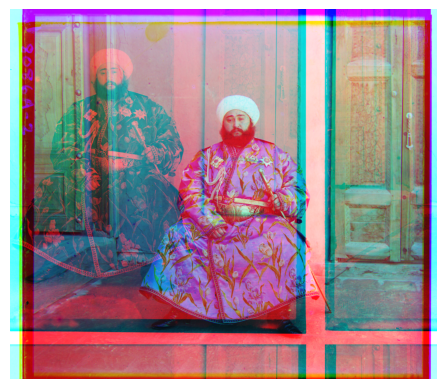

[PROJECT 0NE]
Overview:
This project combines a strip of B, G, R channels stacked vertically
and reconstructs them into a fully colored photograph. For low resolution images like the .pngs, a sliding pixel window (single-scale) is used to match pixels of the 3 channels.
For high resolution images like the .tif photos, both the
single-scale alignment function and a pyramid-based coarse-to-fine alignment is used to construct the coloured image.
Approach:
We begin with a sliding pixel window to estimate alignment across the 3 channels
based on similarity metrics such as Euclidean distance and Normalized Cross-Correlation (NCC). While both functions are present in code, I decided to standardize using NCC for all alignments.
For high resolution images, it would be too time-consuming to match 15x15 pixels of a 3000px x 2000px image, hence a pyramid is used to downscale the original image (by scale of 2), creating coarsed versions of it.
Subsequently, the alignment can be done on the coarser images, which progressively get bigger/more refined, allowing us to eventually align the original resolution image.
Challenges:
Initially, my output image appeared colored but the offset was evidently too high, as double lines were visible. I realised I overlooked an important step, which was to crop the image before alignment.
After implementing the crop function, my images became much clearer. For the bigger images, I realised they required a bit more pre-processing, or they would look off as well.

